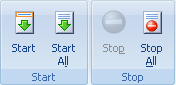
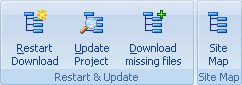

Use la pestaña Descargar para comenzar/detener las descargas de un Proyecto.

Comenzar - comienza la descarga de un Proyecto o Carpeta seleccionado. Utiliza la configuración "Verificación de Modificación de Archivo" del Proyecto para actualizar, o descargar todos los archivos u obtener archivos perdidos.
Comenzar Todos - comienza la descarga de todos los Proyectos en Portable Offline Browser. Advertencia - esto puede causar que Portable Offline Browser se "cuelgue" de forma temporal. Ademãs, si usted tiene muchos proyectos, puede resultar en que Portable Offline Browser use de demasiada memoria.
Detener - detiene inmediatamente la descarga del Proyecto seleccionado.
Detener Todos - detiene todas las descargas activas.

Reiniciar Descarga - comienza a descargar el Proyecto seleccionado con la configuración "Descargar todos los archivos" del diãlogo Propiedades de Proyecto (sección Verificación de Modificación de Archivo).
Actualizar Proyecto - comienza a descargar el Proyecto seleccionado con la configuración "Descargar sólo archivos nuevos o modificados" del diãlogo Propiedades de Proyecto (sección Verificación de Modificación de Archivo).
Descarga Archivos Faltantes - comienza a descargar el Proyecto seleccionado con la configuración "No descargar archivos existentes" del diãlogo Propiedades de Proyecto (sección Verificación de Modificación de Archivo).
Mapa del Sitio - Comienza a descargar el Proyecto seleccionado. Sin embargo, los archivos descargados no se guardan en el disco. Sólo se usan para generar el Mapa de estructura del sitio.

Suspender - suspende o retoma las descargas que estãn en curso. Suspender primero esperarã hasta que todos los archivos que se estãn descargando se completen, y no comenzarã a cargar otros archivos hasta que se reanude. Ver la sección Descargar para mãs detalles.
Suspender a Archivo - Pausa toda actividad de descarga en cualquier momento al poner el archivo en estado de cola de descarga y deteniendo las descargas.
Reanudar desde Archivo - Reanuda desde el archivo guardado previamente en estado de cola de descarga.